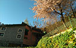
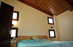

“Under a Winter Cherry Tree resides the house, where we welcome guests to share with us the colours of moving seasons in a Kumaoni Valley dotted with fruit orchards.”
~ Nutan Dixit, the hostess at the homestay
Please email us at untravel@indiauntravelled.com to plan and book your travels.
Overview
The homestay is located in a valley overlooking Mukteshwar town with views spellbounding views of the surrounding mountains. The region is covered with orchards of plum, peaches and apricots; during spring one is treated with all the fruit trees abloom, and in winter the occasional Winter Cherry Blossoms in blush pink, a deep contrast with rest of the landscape. The winters sometimesget dull in the mountains, fortunately, the Winter Cherry that shelters the home keeps the winters lively and colourful.
Please email us at untravel@indiauntravelled.com to plan and book your travels.
Stay
The homestay is a small cottage with 2 rooms open to guests, both with attached bathrooms and individual access to the top terrace. Both rooms also have access to inside the house through a common landing and stairway. The ground floor is occupied by your host. The other members are of the feline and canine variety. One can choose to indulge with the pets by keeping the door to the stairway open or can keep it closed.
Please email us at untravel@indiauntravelled.com to plan and book your travels.
Food & Drinks

All meals at the homestay are made fresh with mostly locally available ingredients. The food is simple, home-made and can be tailored to requirements on a need basis.
Typical breakfasts consist of eggs, made to order with toast. Indian dishes like poha/parantha/upma etc along with tea/coffee/milk. The pumpkin soup and fruit chutney are a hot favourite with guests!
The homestay also has a vegetable patch so some home-grown vegetables are also used, the rest come from the neighborhood. Fruit season has fruits and desserts, all made from peaches and plums that grow at home. Jams, pickles and a variety of chutneys are all prepared by Nutan Aunty at home with mostly home-grown ingredients.
Please email us at untravel@indiauntravelled.com to plan and book your travels.
Activities
The region is abundant with fruit orchards as such spring is a great time to visit if one wishes to indulge in fruit plucking. Some other activities that one can indulge in while staying at the homestay are:
- Orchard visit in the season.
- Picnic in fruit orchards.
- Birdwatching.
- Hike to Mukteshwar.
- Hike to Sitla through the Forest (longer trek).
Day trips to IVRI, Mukteshwar, Jageshwar, Almora and Kasar Devi, can be arranged for those wanting to explore the region further
Please email us at untravel@indiauntravelled.com to plan and book your travels.
Costs
The tariff at the homestay is on a per person basis. So a room is available for a solo traveler for INR 2250. While on twin sharing it is INR 4500. This includes stay, Breakfast & Dinner and Taxes.
Lunch can be requested and is made available for INR 350 per person.
*Alcohol is hard to find in these parts, please do carry your own.
Please email us at untravel@indiauntravelled.com to plan and book your travels.
Location
How to reach:
The homestay is in a village approximately 30 minutes from Mukteshwar. One can drive from Delhi or take the Kathgodam trains. A cab can be arranged for pick up/ drop to the station.
Essentials to Pack:
- Good / Comfortable walking shoes / sneakers.
- In Monsoon : Slippers / Floaters that are okay with getting wet.
- Rain Jackets.
- A light jacket in the Summer and heavy woolens/ layers in winters.
- Torches / headlamps.
- Mosquito Repellent.
- Waterproofing for your electronics.
- Water Bottles so you can fill water from home if you decide to step out.
- Plastic packets if you need for any packing of wet clothes etc. Since plastic is banned in the area, they maybe be hard to find.
- Specific medication if any prescribed, there is a basic First Aid Kit at the cottage but the closest medical shop is about 6 kms away.
- We manage our own waste, so please take note of the dry and wet waste bins.
- If there are any specific packaged food requirements, better to carry that along. Though there are shops in Mukteshwar and Sitla where pretty much everything that you get in a General Store in a city will be available, they are 30-40 minutes drive from the cottage.
Please email us at untravel@indiauntravelled.com to plan and book your travels.
Photo Gallery
- View of the cottage from a distance
- View from the road
- The Winter Cherry tree
- The Winter Cherry tree in the Garden
- Colorful flowers in the garden
- Living Room
- Dining Room
- Stairs upto the rooms from the Living Area
- Earth Room
- Another VIew of Earth Room
- Sky Room
- Another View of Sky Room
- Washroom
- Fruits at the homestay
- Fruit laden trees
- Snacks served with chutney made from local ingredients
- Meals served at the homestay
- Pets
- Friendly pet dogs at the homestay
{kind=link}
{kind=link}
{kind=link}
{kind=link}
{kind=link}
{kind=link}
{kind=link}
{kind=link}
{kind=link}
{kind=link}
{kind=link}
{kind=link}
{kind=link}
{kind=link}
{kind=link}
{kind=link}
{kind=link}
{kind=link}
{kind=link}
Please email us at untravel@indiauntravelled.com to plan and book your travels.
Reviews
To feature your review / testimonial, please write to untravel@indiauntravelled.com.
Please get in touch at untravel@indiauntravelled.com with your requirements to plan a group trip to Dak Bungalow – Peora.
Responsible Travel
Ms Nutan is very well integrated with the local community and infact the neighbouring villages too, being a social and helpful person. She is very passionate about gardening and is often found pottering about in the garden. She loves to multiply, found and sometimes stolen from the roadside variety of plants. Her love for planting and managing waste goes hand in hand as she plants in, old tyres, paint boxes, even buckets. No matter which season you come, there will always be flowers blooming at the homestay!
She's also a seasoned cook, who loves experimenting with seasonal produce... making jams is her favourite past time but she passes her days staying fairly busy with matters of the Kitchen and generally supervising meals.
All the hands at the homestay are locals. Boys from the local schools come over on the weekends when the school is off to help with the upkeep of the garden and plants.
Waste at the homestay is managed consciously. Waste is segregated at source, guests will have separate dustbins for Recyclable and Non Recyclable waste. All wet waste or food waste goes into natural compost.
Please email us at untravel@indiauntravelled.com to plan and book your travels.
Please email us at untravel@indiauntravelled.com to plan and book your travels.